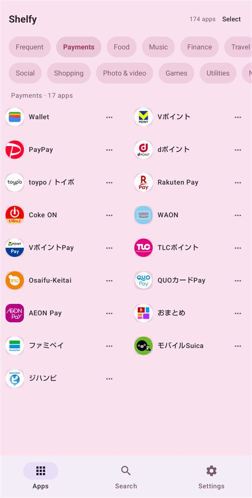
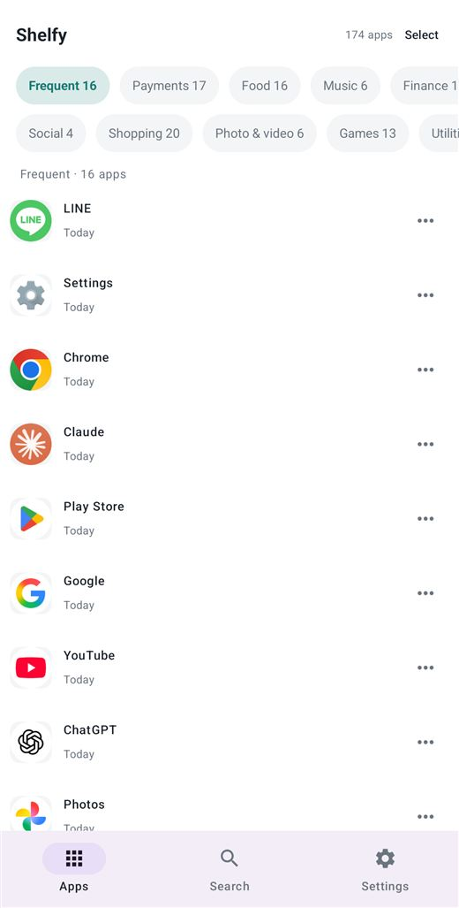
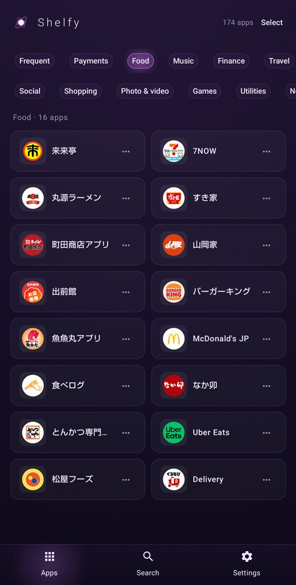
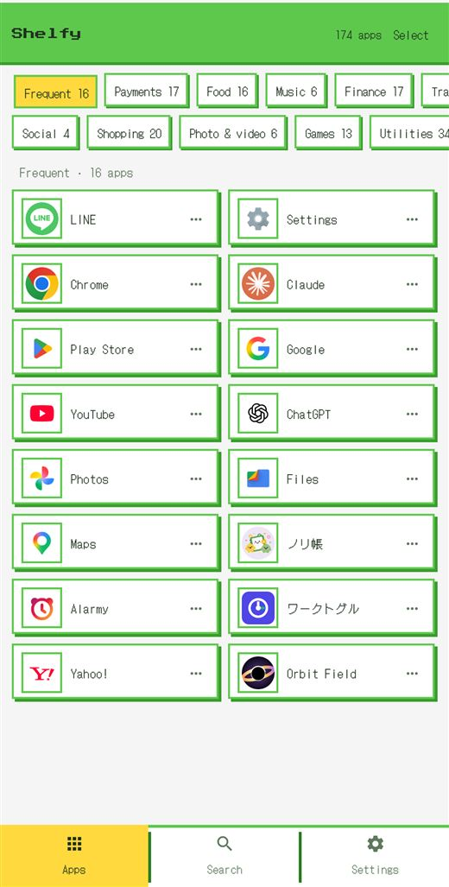
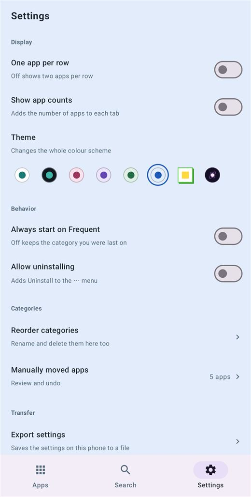
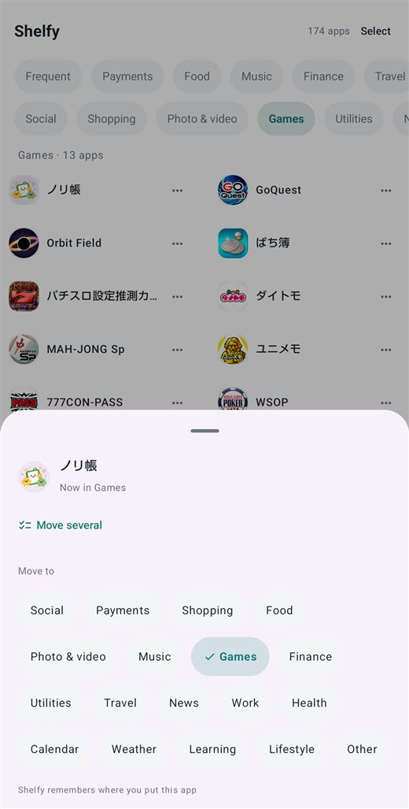

Stop tidying your home screen.
Let Shelfy do the finding
By the time you open it, the sorting is done. There is nothing to set up.
It files every app into a category and puts those categories in tabs.




The tidying happens inside Shelfy.
Your home screen is untouched
Shelfy is not a launcher. It does not move your icons, change your wallpaper, or touch
your widgets. Nothing about how you use your phone has to change — you simply gain a
second way to find things.
Your home screen stays where it is, and you open Shelfy when you are looking for something.
Free
Sorting and search are free, and stay free.
- Sorts automatically
Social, Payments, Shopping, Food, Photo & video, Music, Games, Finance, Utilities, Travel, News, Work, Health, Calendar, Weather, Learning and Lifestyle — seventeen categories, filled without being asked.
- A Frequent tab that means it
Ranked by how many times you actually opened each app over the last two weeks, not by which one you touched most recently.
- Search
Find an app by part of its name, across every category at once.
- Switch between one and two columns, per-category counts
- The white theme
- No advertising
Shelfy Premium
For changing how it looks, and for correcting the sorting by hand.
- Seven themes
Black, pink, purple, green, blue, Dot and Magnetar. Not just a recolour: Dot and Magnetar change the borders, the shadows and the type as well.
- Categories of your own
Add up to five with names you choose, then reorder, rename or delete any of them afterwards.
- Move apps by hand
When the sorting gets something wrong, move an app to another category — several at once if you like, and undo it later if you change your mind.
- Open on the Frequent tab every time
- Allow uninstalling
Lets Shelfy open Android's own delete confirmation for you.
- It survives a new phone (Android 12 and later)
The categories you made and the apps you moved by hand come across when you set up a new handset. You can also export them to a file and keep your own copy. On Android 11 and earlier, use that export to move them.
A monthly or a yearly subscription, cancellable any time. Everything under Free stays
available whether you subscribe or not.


No advertising
Nothing mixed into the list, nothing on launch. That holds whether or not you subscribe.
Permissions
Usage access
PACKAGE_USAGE_STATS
Used for one thing: ordering the Frequent tab. Decline it and every other feature still works.
Request app deletion
REQUEST_DELETE_PACKAGES
Only if you turn on "Allow uninstalling" in settings, and only to open Android's own confirmation screen. Shelfy never removes an app itself.
Internet / network state / billing
INTERNET · ACCESS_NETWORK_STATE · BILLING
Used to sell the subscription and to check whether you already have it. The sorting itself happens on your device. Shelfy does not send the list of apps you have installed.
Requirements
- Requires
- Android 8.0 or later
- Account
- Not needed. Nothing to register, nothing to sign in to
- Premium
- Monthly or yearly; Play shows the price in your currency
- Languages
- English / 日本語, following your device
- Made by
- HY Studio